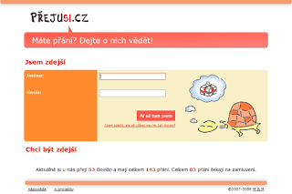
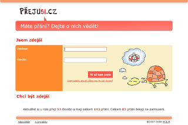
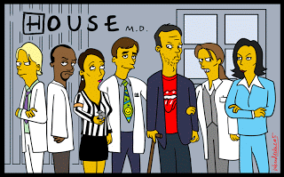

A přišel konec,
nastalo ticho,
nezvoní zvonec,
v krku je sucho.
Chce to mít odvahu,
tenhleten krok,
nespadnout ze svahu,
a nebýt cvok.
Nedá se ztratit nic,
dá se však získat,
stačí jen dosti říct,
a čekat...

středa 31. prosince 2008
Recenze: Sněženky a machři po 25 letech
Natočit úspěšné pokračování nějakého filmu a to nejen komerčně není žádný med. Natočit navíc druhý díl filmu, který se před pětadvaceti lety stal nepřekonatelnou legendou československých a posléze českých teenagerovských komedií je úkol hodný sebevrahů. Přesto se tvůrci Sněženek a machrů po 25 lety rozhodli z letadla vyskočit a čekat, zda se jim padáky otevřou.
Úvod filmu nás zavádí na krkonošský vlek, kde se po dlouhých letech náhodou potkávají profesor Karda, vlastnící malý penzion, lyžařský instruktor Viky Cabadaj a Cabadajova věčná láska Marika, toho času hvězda béčkovských hollywoodských filmů. Právě ona zavdá příčinu ke svolání srazu účastníku lyžařského výcviku po dlouhých pětadvaceti letech.
A tak se do hor vydávají další staří známí: neúspěšný nakladatel Radek Převrátil, televizní bavič Karel Mácha se svým synem v podání Jakuba Prachaře, mladá ambiciózní učitelka Hanka, která se v průběhu let stala ženou v domácnosti, starající se o svého muže a další spolužáci a spolužačky, aby si užili jeden víkend plných vzpomínek.
Počátek filmu však mnoho úžasu ve tvářích diváků nevzbudí. Product placement na vás kouká z každého snímku a recyklované hlášky z jedničky už taky moc nezaujmou. Nudí i někdy zbytečně dlouhé záběry a prostřih na Kateřinu Neumanovou učící malé děti lyžovat v prostřední části budí opravdu jen trapný úsměv. I když právě zde se děj pomalu rozjíždí a nabývá i na zábavnosti, aby nečekaně rychle vyvrcholil a skončil tak jak začal a vlastně nijak. Film zkrátka střída slabší momenty se silnějšími, i když těch slabších je znatelně víc.
Co se týče hereckých výkonů, patří Sněženky k průměru. A i když dva ze tří hlavních představitelů jsou v podstatě neherci, svých rolí se ujali se ctí. Ovšem co se týká postav, byla podle mě nejslabší Cabadajova. Kromě jeho touhy po Marice nebylo z filmu zřetelné jaká je motivace jeho činů a narozdíl od ostatních postav co těch 25 let dělal.
A o čem, že vlastně Sněženky a machři film po 25 letech jsou? Je to film o lidech, kteří zjišťují, že život jde trochu jinak, než si usmysleli. O nesplněných snech a nadějích. Je to film o stárnoucích lidech, a možná právě proto mě nemohl oslovit. Možná, že mu přijdu na chuť za 25 let, až zestárnu a budu se účastnit podobných srazů.
Hodnocení: 2/5
Úvod filmu nás zavádí na krkonošský vlek, kde se po dlouhých letech náhodou potkávají profesor Karda, vlastnící malý penzion, lyžařský instruktor Viky Cabadaj a Cabadajova věčná láska Marika, toho času hvězda béčkovských hollywoodských filmů. Právě ona zavdá příčinu ke svolání srazu účastníku lyžařského výcviku po dlouhých pětadvaceti letech.
A tak se do hor vydávají další staří známí: neúspěšný nakladatel Radek Převrátil, televizní bavič Karel Mácha se svým synem v podání Jakuba Prachaře, mladá ambiciózní učitelka Hanka, která se v průběhu let stala ženou v domácnosti, starající se o svého muže a další spolužáci a spolužačky, aby si užili jeden víkend plných vzpomínek.
Počátek filmu však mnoho úžasu ve tvářích diváků nevzbudí. Product placement na vás kouká z každého snímku a recyklované hlášky z jedničky už taky moc nezaujmou. Nudí i někdy zbytečně dlouhé záběry a prostřih na Kateřinu Neumanovou učící malé děti lyžovat v prostřední části budí opravdu jen trapný úsměv. I když právě zde se děj pomalu rozjíždí a nabývá i na zábavnosti, aby nečekaně rychle vyvrcholil a skončil tak jak začal a vlastně nijak. Film zkrátka střída slabší momenty se silnějšími, i když těch slabších je znatelně víc.
Co se týče hereckých výkonů, patří Sněženky k průměru. A i když dva ze tří hlavních představitelů jsou v podstatě neherci, svých rolí se ujali se ctí. Ovšem co se týká postav, byla podle mě nejslabší Cabadajova. Kromě jeho touhy po Marice nebylo z filmu zřetelné jaká je motivace jeho činů a narozdíl od ostatních postav co těch 25 let dělal.
A o čem, že vlastně Sněženky a machři film po 25 letech jsou? Je to film o lidech, kteří zjišťují, že život jde trochu jinak, než si usmysleli. O nesplněných snech a nadějích. Je to film o stárnoucích lidech, a možná právě proto mě nemohl oslovit. Možná, že mu přijdu na chuť za 25 let, až zestárnu a budu se účastnit podobných srazů.
Hodnocení: 2/5
sobota 27. prosince 2008
Bilance 2008: Filmy
Rok 2008 pomalu končí a začíná bilancování, jaký vlastně byl. V několika svých příštích příspěvcích bych se rád vrátil k věcem, které mě v uplynulém osmičkovém roce zaujaly.
První díl bilancování jsem věnoval filmům. Loni jsem jich viděl opravdu hodně, a proto bylo těžké vybrat z mého pohledu ten nejlepší. V následujícím přehledu najdete filmy, které podle mě rozhodně stály za vidění, a pokud jste některý z nich neviděli, měli byste to co nejrychleji napravit.
České filmy
1. Bobule
Nejlepším loňským českým filmem, který jsem měl v tomto roce shlédnou byly podle mě Bobule. Příběh o dvou zlodějíčcích, kteří se utekli z Prahy před spravedlností, nadchne milovníky klidných filmů, jižní Moravy a vína a možná taky fanoušky skupiny Kryštof, která věnovala filmu titulní skladbu Atentát.
Nejlepším loňským českým filmem, který jsem měl v tomto roce shlédnou byly podle mě Bobule. Příběh o dvou zlodějíčcích, kteří se utekli z Prahy před spravedlností, nadchne milovníky klidných filmů, jižní Moravy a vína a možná taky fanoušky skupiny Kryštof, která věnovala filmu titulní skladbu Atentát.
2. U mě dobrý
Hřebejkovi Dannyho parťáci počesku jsou příjemnou oddychovou komedií podle povídek Petra Šabacha, který stál i za předchozími filmy tohoto režiséra, jako byly Šakalí léta a Pelíšky. Ve filmu exceluje Bolek Polívka coby vysloužili kouzelník, který zorganizuje dokonalou pomstu podvodníčkům se skořápkami.
P.S. Ví někdo, jak to udělal s tou vodkou?:)
Hřebejkovi Dannyho parťáci počesku jsou příjemnou oddychovou komedií podle povídek Petra Šabacha, který stál i za předchozími filmy tohoto režiséra, jako byly Šakalí léta a Pelíšky. Ve filmu exceluje Bolek Polívka coby vysloužili kouzelník, který zorganizuje dokonalou pomstu podvodníčkům se skořápkami.
P.S. Ví někdo, jak to udělal s tou vodkou?:)
3. Nestyda
Bronzovou příčku si u mě vydobyl další Hřebejkův film. V hlavní roli nenapravitelného sukničkáře Oskara podle povídek Michala Viewegha se představil skvělý Jiří Macháček.
Bronzovou příčku si u mě vydobyl další Hřebejkův film. V hlavní roli nenapravitelného sukničkáře Oskara podle povídek Michala Viewegha se představil skvělý Jiří Macháček.
U dalších z českých filmů bych se pozastavil jen u Kozího příběhu, který podle mě nenaplnil očekávání a nestal se českým Shrekem, ať už z důvodu ne příliš dokonalé animace nebo absence zajímavého příběhu. Ale možná je to jen tím, že už jsem na tyhle filmy starý.
Anglické jahody také předcházela pověst o skvělém filmu mapující srpen 1968 z pohledu obyčejných lidí. Kdyby snad tvůrci lépe vybrali ústřední hereckou dvojici příběhu a přidali trochu na dynamice příběhu, mohlo tomu tak být, ale spíš bych jahody viděl mezi televizními filmy na nedělní večer.
Zahraniční filmy
1. Veřejný nepřítel číslo 1 + Epilog
Úchvatný film sledující osudy jednoho z největších francouzských bankovních lupičů Jacquese Mesrina (čtěte Merina!). Roli tohoto padoucha ztvárnil Vincent Cassel tak skvěle, až vám bude líto toho jak Mesrine skončil. Podle mě jeden z nejlepších gangsterských filmů vůbec.
Anglické jahody také předcházela pověst o skvělém filmu mapující srpen 1968 z pohledu obyčejných lidí. Kdyby snad tvůrci lépe vybrali ústřední hereckou dvojici příběhu a přidali trochu na dynamice příběhu, mohlo tomu tak být, ale spíš bych jahody viděl mezi televizními filmy na nedělní večer.
Zahraniční filmy
1. Veřejný nepřítel číslo 1 + Epilog
Úchvatný film sledující osudy jednoho z největších francouzských bankovních lupičů Jacquese Mesrina (čtěte Merina!). Roli tohoto padoucha ztvárnil Vincent Cassel tak skvěle, až vám bude líto toho jak Mesrine skončil. Podle mě jeden z nejlepších gangsterských filmů vůbec.
2. Temný rytíř
Nejsem příznivce filmů podle komiksových předloh. Ani nejsem příznivcem filmů jejichž úspěch je postaven na mediální masáži, ale jejich přínos je nulový. A i když Temný rytíř vypadá jako jasný favorit patřící do této přihrádky, není tomu tak. Temný rytíř je strhující více než dvouhodinový akční thriller, při kterém běhá mráz po zádech, s vynikajícím hereckým výkonem Heatha Ledgera v roli Jokera.
3. Mamma Mia
Tenhle ztřeštěný muzikál na bázi písniček od švédské skupiny ABBA rozhodně musíte vidět. Přece byste se nenechali připravit o zpěv Meryl Streepové, Pierce Brosnana nebo Colina Firtha?
Kromě téhle medailové trojice vřele doporučuju černou komedii V Bruggách, romantický animák Vall-I a film, z kterého vás bude mrazit v zádech, Náš vůdce, o tom jak lehké je manipulovat davem.
A jako přídavek nakonec tu mám ukázku ze skvělé animované komedie Madagaskar 2: Útěk do Afriky, která dokazuje, že i pokračovaní může být lepší první díl.
čtvrtek 25. prosince 2008
Hvězda
Jsi na nebi mém zlatavá hvězda,
a chci věřit, že se mi to nezdá.
Čekal jsem staletí na tvůj svit,
který mi ukáže kudy jít.
Přeskákal propasti a slézal kopce
hnal se za vidinou šťastného konce.
Chtěl bych tě v náručí svém teď svírat,
a tvé rty slaďounké jemně líbat.
Hvězdičko zářivá v srdci tě nosím,
o kousek lásky tvé pokorně prosím.
a chci věřit, že se mi to nezdá.
Čekal jsem staletí na tvůj svit,
který mi ukáže kudy jít.
Přeskákal propasti a slézal kopce
hnal se za vidinou šťastného konce.
Chtěl bych tě v náručí svém teď svírat,
a tvé rty slaďounké jemně líbat.
Hvězdičko zářivá v srdci tě nosím,
o kousek lásky tvé pokorně prosím.
čtvrtek 11. prosince 2008
Boj o pískoviště
Ve své práci si jdou po krku mnohdy vehementněji než sousedi při sporu o napadaná jablka. Čtyři dny před Vánoci se však promění ve veselé chlapíčky, kteří se vlastně mají rádi. O kom, že je řeč? O našich parlamentních zástupcích.
V katedrále sv. Víta spolu poslanci a senátoři napříč politickým spektrem zapějí Rybovu mši vánoční. Tedy až na zástupce KSČM. Organizátor akce Petr Bratský z ODS je nepozval. Konzervativci se zřejmě nechtějí opírat o komunistické hlasy ani při zpěvu. A aby byl dojem předvánočního smíření maximální, bude vše probíhat pod dohledem toho nejpovolanějšího - kardinála Miloslava Vlka.
Nacvičují tak zelený Martin Bursík, odésák Petr Tluchoř nebo sociální demokrat František Bublan. Jen lidovecký zástupce Jan Kasal nakonec couvl. Nejspíše usoudil, že jeho zpěv by byl stejně kolísavý jako lidovecká politika.
Skutečných superstar se však posluchači v katedrále nedočkají. Sólisti Mirek Topolánek a Jiří Paroubek se totiž neobjeví. Podle nepotvrzených informací bude premiér brázdit innsbrucké sjezdovky, zatímco šéf opozice byl prý krajně nespokojen s nedostatečným mediálním pokrytím akce.
Naděje některých idealistů a snílků, že by kardinálova osobnost mohla silně zapůsobit na první muže naší politické scény, aby začali řešit skutečné problémy Čechů, tak definitivně padla.
Takže jen co budou popelnice přeplněny vyhozenými vánočními stromky a útulky plné nechtěných mazlíčků, budou se Topolánek s Paroubkem v parlamentu znovu hádat jako malí kluci na pískovišti. A podle hesla, když ty mně bábovičku, já tobě hrad, budou před zraky celé Evropy dokazovat svojí výjimečnost a snažit se, co nejlépe naplňovat skrytá poslání od vyšších bytostí.
Český národ má holt smůlu. V době nastávající ekonomické krize by spíš potřeboval, aby se hoši nějak dohodli a snažili se zabránit tomu, aby díky svým bojům nevyházeli veškerý písek. Možná by pomohl výprask rodičů, v našem případě tedy voličů.
Jen aby nepřišel příliš pozdě a nebyl špatně mířený. Pískoviště by totiž mohli za potlesků davu obsadit výrostci, kteří si touží ze všeho nejvíc splnit svůj velký sen o skutečně bílých Vánocích. Myslím, že ty by však většina národa raději oželela.
Psáno pro rozhlasové tvůrčí dílny na FSV UK
V katedrále sv. Víta spolu poslanci a senátoři napříč politickým spektrem zapějí Rybovu mši vánoční. Tedy až na zástupce KSČM. Organizátor akce Petr Bratský z ODS je nepozval. Konzervativci se zřejmě nechtějí opírat o komunistické hlasy ani při zpěvu. A aby byl dojem předvánočního smíření maximální, bude vše probíhat pod dohledem toho nejpovolanějšího - kardinála Miloslava Vlka.
Nacvičují tak zelený Martin Bursík, odésák Petr Tluchoř nebo sociální demokrat František Bublan. Jen lidovecký zástupce Jan Kasal nakonec couvl. Nejspíše usoudil, že jeho zpěv by byl stejně kolísavý jako lidovecká politika.
Skutečných superstar se však posluchači v katedrále nedočkají. Sólisti Mirek Topolánek a Jiří Paroubek se totiž neobjeví. Podle nepotvrzených informací bude premiér brázdit innsbrucké sjezdovky, zatímco šéf opozice byl prý krajně nespokojen s nedostatečným mediálním pokrytím akce.
Naděje některých idealistů a snílků, že by kardinálova osobnost mohla silně zapůsobit na první muže naší politické scény, aby začali řešit skutečné problémy Čechů, tak definitivně padla.
Takže jen co budou popelnice přeplněny vyhozenými vánočními stromky a útulky plné nechtěných mazlíčků, budou se Topolánek s Paroubkem v parlamentu znovu hádat jako malí kluci na pískovišti. A podle hesla, když ty mně bábovičku, já tobě hrad, budou před zraky celé Evropy dokazovat svojí výjimečnost a snažit se, co nejlépe naplňovat skrytá poslání od vyšších bytostí.
Český národ má holt smůlu. V době nastávající ekonomické krize by spíš potřeboval, aby se hoši nějak dohodli a snažili se zabránit tomu, aby díky svým bojům nevyházeli veškerý písek. Možná by pomohl výprask rodičů, v našem případě tedy voličů.
Jen aby nepřišel příliš pozdě a nebyl špatně mířený. Pískoviště by totiž mohli za potlesků davu obsadit výrostci, kteří si touží ze všeho nejvíc splnit svůj velký sen o skutečně bílých Vánocích. Myslím, že ty by však většina národa raději oželela.
Psáno pro rozhlasové tvůrčí dílny na FSV UK
úterý 25. listopadu 2008
Osudová
Všechno to krásné zavál čas,
tak jako zelené pláně sníh,
možná se někdy sejdeme zas,
až přejde bol v našich srdcích.
Bude to zas jako prvně,
budu se smát a budu nesmělý.
Budu ti připadat divně,
a vůbec ne dost dospělý.
A až oblažíš mě svým úsměvem,
budu si jist, že tě chci,
pak překvapíš svým obratem,
skončíme v šíleném kotrmelci.
Některé věci tak mají být,
mají svůj skrytý význam,
a nelze je zpátky vzít,
přec bráním se teď slzám.
tak jako zelené pláně sníh,
možná se někdy sejdeme zas,
až přejde bol v našich srdcích.
Bude to zas jako prvně,
budu se smát a budu nesmělý.
Budu ti připadat divně,
a vůbec ne dost dospělý.
A až oblažíš mě svým úsměvem,
budu si jist, že tě chci,
pak překvapíš svým obratem,
skončíme v šíleném kotrmelci.
Některé věci tak mají být,
mají svůj skrytý význam,
a nelze je zpátky vzít,
přec bráním se teď slzám.
pondělí 17. listopadu 2008
úterý 11. listopadu 2008
Alter Ego
Jsi vrahem naději a lásek,
důvod, proč přibývá mi vrásek,
jsi lupičem mých snů,
autorem mých promarněných dnů.
Jsi kámen, co mě táhne ke dnu,
jsi chladná jako zima v lednu.
Nesmím tě vykázat ze svého bytí,
musím tě snášet, není zbytí.
důvod, proč přibývá mi vrásek,
jsi lupičem mých snů,
autorem mých promarněných dnů.
Jsi kámen, co mě táhne ke dnu,
jsi chladná jako zima v lednu.
Nesmím tě vykázat ze svého bytí,
musím tě snášet, není zbytí.
pondělí 10. listopadu 2008
Zlatá boleslavská
V předtuše dnešního vítězství mě kolem jedné hodiny odpoledne napadla tato báseň. A jelikož jsme opravdu vyhráli, tak ji mohu už zveřejnit!
V Boleslavi vládne ticho,
vůbec nikdo nedutá,
nad způsobem jakým Baník,
s místním klubem zametá!
V Boleslavi je jak v hrobě,
přítomným je do breku,
jejich slavný FKMB,
podlehl dnes Baníku!
Pavel Hapal zle se tváří,
Honza Rajnoch nadává,
Venca Svěrkoš s kotlem křepčí,
nejlepší je Ostrava!
Chceš-li vidět pěkný fotbal,
a správně si zafandit,
pospěš rychle na Bazaly,
nemůžou nás zastavit!
V Boleslavi vládne ticho,
vůbec nikdo nedutá,
nad způsobem jakým Baník,
s místním klubem zametá!
V Boleslavi je jak v hrobě,
přítomným je do breku,
jejich slavný FKMB,
podlehl dnes Baníku!
Pavel Hapal zle se tváří,
Honza Rajnoch nadává,
Venca Svěrkoš s kotlem křepčí,
nejlepší je Ostrava!
Chceš-li vidět pěkný fotbal,
a správně si zafandit,
pospěš rychle na Bazaly,
nemůžou nás zastavit!
úterý 28. října 2008
Jak vyzrát na vánoční dárky
Konec října. Venku padá listí, někdy zaprší, někdy nás mile překvapí babí léto. Nic nenasvědčuje tomu, že za necele dva měsíce budou opět Vánoce. Tedy skoro nic. V Tescu začala předvánoční horečka už před týdnem. Nemůžete ji přehlédnout. Ozdoby, stromky a podobné cetky jsou vystaveny pro jistotu hned u vchodu. Když jsem to viděl, padl na mě onen pověstný předvánoční stres. Urychleně jsem začal přemýšlet, koho čím obdaruju a jak je už zvykem, nápady se nedostavovaly. Stres začal nabírat na obrátkách. "Klid, mám ještě dost času. Není ani listopad." ozval se optimista uvnitř "Jo, to si říkáš každý rok mladej a víš, jak to končí... V Tescu 23.12..." reagoval hbitě realista
Taky máte problém s dárky pro své blízké? Ať už k vánocům, narozeninám, nebo jim chcete prostě jen udělat radost? S dětmi je to jednoduché. Napíší dopis Ježíškovi, nebo s nimi projdete hračkářství a je po problémech. S odrostlejšími jedinci je to už problém. Dopisy Ježíškovi nepíšou, jelikož Pepa ve škole řekl, že stejně neexistuje, a od té doby se prostě šprajcnou a tečka. Hračky je už taky neberou. Koupit iPhone si můžou dovolit jen někteří a pantofle jsou už profláklé.
Naštěstí je tu doba internetu a ten nabízí spoustu možností. Jednou z nich je stránka www.prejusi.cz. Zaregistrujete se, vypíšete seznam svých přání, rozešlete mailem vstup do vašeho seznamu a pak už jen v klidu čekáte, co najdete pod vánočním koštětem v těch krabicích zabalených do pestrobarevných papírů. Ulehčíte tak práci svým blízkým. A také sebe ušetříte peliškovské situace "Díky, táto!"
Výhodou je i to, že ostatní vidí, která přání už jsou rozebraná, a tak by teoreticky nemělo dojít k tomu, že něco dostanete dvakrát.
Ovládání je celkem jednoduché a zvládne je i, jak říkal náš matikář, průměrně inteligentní delfín s přejetou hlavou. Takže nezbývá než to zkusit a pak čekat, jestli se pod smrkem něco z vašich tajných přání nakonec objeví.
P.S. Ájo, s tím Ferrari to myslím smrtelně vážně!!! Takže jestli ho nemáš v plánu sehnat, přenech ho, prosím, někomu jinému!
Taky máte problém s dárky pro své blízké? Ať už k vánocům, narozeninám, nebo jim chcete prostě jen udělat radost? S dětmi je to jednoduché. Napíší dopis Ježíškovi, nebo s nimi projdete hračkářství a je po problémech. S odrostlejšími jedinci je to už problém. Dopisy Ježíškovi nepíšou, jelikož Pepa ve škole řekl, že stejně neexistuje, a od té doby se prostě šprajcnou a tečka. Hračky je už taky neberou. Koupit iPhone si můžou dovolit jen někteří a pantofle jsou už profláklé.
Naštěstí je tu doba internetu a ten nabízí spoustu možností. Jednou z nich je stránka www.prejusi.cz. Zaregistrujete se, vypíšete seznam svých přání, rozešlete mailem vstup do vašeho seznamu a pak už jen v klidu čekáte, co najdete pod vánočním koštětem v těch krabicích zabalených do pestrobarevných papírů. Ulehčíte tak práci svým blízkým. A také sebe ušetříte peliškovské situace "Díky, táto!"
Výhodou je i to, že ostatní vidí, která přání už jsou rozebraná, a tak by teoreticky nemělo dojít k tomu, že něco dostanete dvakrát.
Ovládání je celkem jednoduché a zvládne je i, jak říkal náš matikář, průměrně inteligentní delfín s přejetou hlavou. Takže nezbývá než to zkusit a pak čekat, jestli se pod smrkem něco z vašich tajných přání nakonec objeví.
P.S. Ájo, s tím Ferrari to myslím smrtelně vážně!!! Takže jestli ho nemáš v plánu sehnat, přenech ho, prosím, někomu jinému!
pondělí 27. října 2008
Žurnarchiv: Borat proslavil Kazachstán, Kazachstán Borata
Přidávám další ukázku své školní tvorby. Tentokrát jde o komentář, který jsem napsal jako domácí úkol téměř před dvěma lety 13. 11. 2006.
Sacha Baron Cohen. Britský komik, jehož jméno u nás donedávna znala jen úzká skupina fanoušků, se nedávno dostal do popředí mediálního zájmu díky chystané premiéře svého kontroverzního celovečerního filmu Borat aneb Nakoukání do amerycké kultůry na obědnávku slavnoj kazašskoj národu.
Cohen je v Británii velmi populární díky svému pořadu Da Ali G Show vysílaného na Channel 4. Právě v ní vzniklo, vedle postav jamajského rappera Ali G a rakouského moderátora pořadu o módě, homosexuála Bruna, Cohenovo třetí alter-ego, kazašský novinář Borat.
Kazachstánský reportér byl vyslán vládou své rodné země do USA a Velké Británie, aby přiblížil obyvatelům své vlasti zdejší zvyky a životní styl. Po čase se však producenti nespokojili pouze s krátkými televizními scénkami a po úspěchu prvního Cohenova snímku Ali G Indahouse se rozhodli převést na stříbrné plátno i Borata.
Do všeobecného povědomí se však film dostal až po protestech kazašské vlády na konci letošního července. Borat totiž Kazachstán představuje jako zemi, kde jsou ženám odpírána jakákoliv práva a na Židy a Romy jsou zde pořádány hony. Film je také plný různých antisemitských narážek. Je třeba však dodat, že Cohen je, jak sám říká, „hrdý Žid“, a proto tyto vtipy nevzbudily v židovské obci tak velkou nevoli.
Naopak Kazachstán nepřestal proti snímku bojovat, a dokonce poslal diplomatickou nótu americké vládě. Náměstek kazašského ministra zahraničí poté pozval Cohena na návštěvu Kazachstánu, aby ho zde přesvědčil, že zdejší víno se opravdu nevyrábí z koňské moči. Cohen reagoval po svém. V převleku za Borata vydal prohlášení, že s tím britským komikem nemá nic společného a souhlasí s rozhodnutím své vlády „toho Žida“ soudit.
Kazachstán svou reakcí nakonec způsobil pravý opak než zamýšlel. Místo zakázaní projekce tohoto snímku dosáhl jeho kritikou velkého zpopularizování a ten nakonec vydělal za první den promítání v USA přes dvacet šest milionu amerických dolarů. U nás byla premiéra filmu díky obrovskému zájmu přesunuta z března příštího roku už na konec letošního listopadu.
Poslední Cohenův snímek tak dokázal, že v dnešní době není nutná žádná megalomanská reklamní kampaň, stačí k tomu jistá dávka kontroverze a média s politiky už přispějí k propagaci sami. A to je možná největší pointou celého filmu.
Sacha Baron Cohen. Britský komik, jehož jméno u nás donedávna znala jen úzká skupina fanoušků, se nedávno dostal do popředí mediálního zájmu díky chystané premiéře svého kontroverzního celovečerního filmu Borat aneb Nakoukání do amerycké kultůry na obědnávku slavnoj kazašskoj národu.
Cohen je v Británii velmi populární díky svému pořadu Da Ali G Show vysílaného na Channel 4. Právě v ní vzniklo, vedle postav jamajského rappera Ali G a rakouského moderátora pořadu o módě, homosexuála Bruna, Cohenovo třetí alter-ego, kazašský novinář Borat.
Kazachstánský reportér byl vyslán vládou své rodné země do USA a Velké Británie, aby přiblížil obyvatelům své vlasti zdejší zvyky a životní styl. Po čase se však producenti nespokojili pouze s krátkými televizními scénkami a po úspěchu prvního Cohenova snímku Ali G Indahouse se rozhodli převést na stříbrné plátno i Borata.
Do všeobecného povědomí se však film dostal až po protestech kazašské vlády na konci letošního července. Borat totiž Kazachstán představuje jako zemi, kde jsou ženám odpírána jakákoliv práva a na Židy a Romy jsou zde pořádány hony. Film je také plný různých antisemitských narážek. Je třeba však dodat, že Cohen je, jak sám říká, „hrdý Žid“, a proto tyto vtipy nevzbudily v židovské obci tak velkou nevoli.
Naopak Kazachstán nepřestal proti snímku bojovat, a dokonce poslal diplomatickou nótu americké vládě. Náměstek kazašského ministra zahraničí poté pozval Cohena na návštěvu Kazachstánu, aby ho zde přesvědčil, že zdejší víno se opravdu nevyrábí z koňské moči. Cohen reagoval po svém. V převleku za Borata vydal prohlášení, že s tím britským komikem nemá nic společného a souhlasí s rozhodnutím své vlády „toho Žida“ soudit.
Kazachstán svou reakcí nakonec způsobil pravý opak než zamýšlel. Místo zakázaní projekce tohoto snímku dosáhl jeho kritikou velkého zpopularizování a ten nakonec vydělal za první den promítání v USA přes dvacet šest milionu amerických dolarů. U nás byla premiéra filmu díky obrovskému zájmu přesunuta z března příštího roku už na konec letošního listopadu.
Poslední Cohenův snímek tak dokázal, že v dnešní době není nutná žádná megalomanská reklamní kampaň, stačí k tomu jistá dávka kontroverze a média s politiky už přispějí k propagaci sami. A to je možná největší pointou celého filmu.
neděle 26. října 2008
Tiché hřmění
Zbývá jen 10 dní. Těším se na to setkání, jako se malí caparti těší na pouť. Bude to už počtvrté, a přesto se těším s přibývajícím počtem našich shledání víc a víc. Ale tentokrát to bude hodně zvláštní a jiné.
Když jsme se střetli poprvé, moc jsme se ještě neznali. Bylo to takové oťukávání. Teprve na konci jsme pochopili, že si báječně rozumíme. Trvalo to však další 4 roky, než jsme se znovu viděli. Každý jsme byli už trochu jinde, snad jsme i dospěli. I místo našeho setkání bylo noblesnější. Ale už od prvního momentu jsme opět cítili tu vzájemnou přitažlivost, to mrazivé chvění. Bylo jen těžko k uvěření, že ty tři společně prožité hodiny utekly jako voda v Rubikonu.
Dlouho jsem na ty chvíle nemohl zapomenout. Rozhodl jsem se, že při první možné příležitosti udělám maximum proto, aby se to opakovalo. A po půlroce jsem se dočkal. Bylo to opět úžasné. Jen ta sladká tečka na konci chyběla. Teď už to bude snad i s ní!
Když jsme se střetli poprvé, moc jsme se ještě neznali. Bylo to takové oťukávání. Teprve na konci jsme pochopili, že si báječně rozumíme. Trvalo to však další 4 roky, než jsme se znovu viděli. Každý jsme byli už trochu jinde, snad jsme i dospěli. I místo našeho setkání bylo noblesnější. Ale už od prvního momentu jsme opět cítili tu vzájemnou přitažlivost, to mrazivé chvění. Bylo jen těžko k uvěření, že ty tři společně prožité hodiny utekly jako voda v Rubikonu.
Dlouho jsem na ty chvíle nemohl zapomenout. Rozhodl jsem se, že při první možné příležitosti udělám maximum proto, aby se to opakovalo. A po půlroce jsem se dočkal. Bylo to opět úžasné. Jen ta sladká tečka na konci chyběla. Teď už to bude snad i s ní!
První rande
Poprvé jsem tuhle partu kluků z Ostravy a okolí zaregistroval před 7 lety, když vydali své první album Magnetické pole. Lolita se mi nesmazatelně vryla do hlavy a vzpomínám si, jak jsem si jejím zpěvem zkracoval nepříjemné chvíle při dlouhých stoupáních na kole na dovolené o rok později na Šumavě (Jo, mlel jsem z posledního, ale zpíval jsem si do rytmu šlapání:"Brány nocí...," a docela to pomáhalo:))
Poprvé jsem tuhle partu kluků z Ostravy a okolí zaregistroval před 7 lety, když vydali své první album Magnetické pole. Lolita se mi nesmazatelně vryla do hlavy a vzpomínám si, jak jsem si jejím zpěvem zkracoval nepříjemné chvíle při dlouhých stoupáních na kole na dovolené o rok později na Šumavě (Jo, mlel jsem z posledního, ale zpíval jsem si do rytmu šlapání:"Brány nocí...," a docela to pomáhalo:))
Pak přišla deska V siločarách s Obchodníkem s deštěm a od té chvíle patří Kryštof k mým nejoblíbenějším kapelám. A přesto, že se mí oblíbení interpreti často mění, band kolem Richarda Krajča zůstává v mé topce neustále.
Pokud bych si měl ze všech čtyř řadovek vybrat svou nejoblíbenější, byl by to určitě Mikrokosmos, třetí studiové album Kryštofů, pro svůj až melancholický zvuk plný smyčců a taky nekomerčnost, kterou deska potvrdila tím, že až na Srdce se žádná z písniček příliš v rádiích nechytla. Přitom podle mě patří například Kruhy z duhy, Zrcadlení, Motýlek a Stár k tomu nejlepšímu, co Kryštof vydal.
Alea Iacta Est
Ze světa: Dne 13. 10. 2006 bylo šest českých občanů spatřeno u severoitalské řeky Rubikon. Skupina ve složení Nikolaj Arichtev, Nikolas Grigoriadis, Evžen Hofmann, Richard Krajčo, Nikos Petros Kuluris, Ondřej Kyjonka nebezpečně hazardovali se svými životy, když se pokoušeli řeku přebrodit v místě, kde má řeka velice silný proud, Naštěstí se nikomu z nich nic nestalo a italská policie je pouze deportovala zpět do země a udělila pořádkovou pokutu.
Pořádný komerční úspěch potkal tuhle šestici muzikantů až s čtvrtou deskou s osudovým názvem Rubikon. Skupina bájnou řeku v pořádku překonala a definitivně se dostala do povědomí všech hudebních fanoušků v Česku. Skvělou hudbu doplnily skvělé texty Richarda Krajča a úspěch se musel zákonitě dostavit. Deska plná hitů jako je Svědomí, Rubikon či První veselá přinesla kapele taky zisk několika Andělů.
Z téhle desky patří k mým nejoblíbenějším Ostravaczech a doufám, že jej kluci v Lucerna Music Baru zahrajou! (Zvlášť, když den předtím porazí na Bazalech jistě Baník Spartu. Zakřičet si v Praze Baník je král s minimální možností dostat přes hubu je můj velký sen a ona sladká tečka:))) A druhá, pro mě osudová, Jízda v protisměru. V téhle písni je skryto tolik deprese, slz a beznaděje, až se zdá, že je to téměř nemožné. Ale mě vždy dokonale pomáhá k tomu, abych se odrazil od dna a dostal se zpět do pohody.
A pak přišla už bestofka s výběrem 13 nejlepších písní plus dvě novinky - Plán a Atentát, s ní Akustik Tour, které se stalo jistě jednou z hlavních hudebních událostí loňského roku. Měl jsem možnost se zúčastnit závěrečného koncertu ve Stavovském divadle v Praze a byl to fakt nezapomenutelný zážitek. Jestli někdo do té doby pochyboval, jestli jsou opravdu nejlepší kapelou v zemi, tak na tomto turné to Kryštofi potvrdili (ve vší úctě ke Kabátům, Chinaskám, Support Lesbiens a dalším).
Budoucnost
Další album vyjde až na konci roku 2009, ale už teď se v rádiích objeví nový singl Tak nějak málo, který bude i ústřední písní seriálu ostravského studia ČT Proč bychom se netopili. A na některých současných koncertech hrává Richard Krajčo novou píseň, která by mohla nést pracovní název Ráno.
Právě ta má podle mě obrovský potenciál stát se další obrovskou peckou a dá se na ní dobře demonstrovat, proč mám Kryštof tak rád. Richard Krajčo totiž dokáže napsat text plný emocí a přitom ne tak stupidně a jednoduše, jako je to například v případě zahraničních interpretů (Už jste si zkoušeli překládat třeba hit Enriqua Iglesiase Hero a dokážete si představit, že by ho někdo z našich interpretů přezpíval?). Každý si v jeho metaforách může najít to své, o čem píseň je. A to je na tom to kouzelné. Takže 4. listopadu v Lucerna Music Baru nashledanou! A jako ochutnávku přidávám ono Ráno, co mám zakázáno...
Poznámka: Většina videí je z pořadu Kryštof pomáhá dětem, nebo tak nějak.
Pokud bych si měl ze všech čtyř řadovek vybrat svou nejoblíbenější, byl by to určitě Mikrokosmos, třetí studiové album Kryštofů, pro svůj až melancholický zvuk plný smyčců a taky nekomerčnost, kterou deska potvrdila tím, že až na Srdce se žádná z písniček příliš v rádiích nechytla. Přitom podle mě patří například Kruhy z duhy, Zrcadlení, Motýlek a Stár k tomu nejlepšímu, co Kryštof vydal.
Alea Iacta Est
Ze světa: Dne 13. 10. 2006 bylo šest českých občanů spatřeno u severoitalské řeky Rubikon. Skupina ve složení Nikolaj Arichtev, Nikolas Grigoriadis, Evžen Hofmann, Richard Krajčo, Nikos Petros Kuluris, Ondřej Kyjonka nebezpečně hazardovali se svými životy, když se pokoušeli řeku přebrodit v místě, kde má řeka velice silný proud, Naštěstí se nikomu z nich nic nestalo a italská policie je pouze deportovala zpět do země a udělila pořádkovou pokutu.
Pořádný komerční úspěch potkal tuhle šestici muzikantů až s čtvrtou deskou s osudovým názvem Rubikon. Skupina bájnou řeku v pořádku překonala a definitivně se dostala do povědomí všech hudebních fanoušků v Česku. Skvělou hudbu doplnily skvělé texty Richarda Krajča a úspěch se musel zákonitě dostavit. Deska plná hitů jako je Svědomí, Rubikon či První veselá přinesla kapele taky zisk několika Andělů.
Z téhle desky patří k mým nejoblíbenějším Ostravaczech a doufám, že jej kluci v Lucerna Music Baru zahrajou! (Zvlášť, když den předtím porazí na Bazalech jistě Baník Spartu. Zakřičet si v Praze Baník je král s minimální možností dostat přes hubu je můj velký sen a ona sladká tečka:))) A druhá, pro mě osudová, Jízda v protisměru. V téhle písni je skryto tolik deprese, slz a beznaděje, až se zdá, že je to téměř nemožné. Ale mě vždy dokonale pomáhá k tomu, abych se odrazil od dna a dostal se zpět do pohody.
A pak přišla už bestofka s výběrem 13 nejlepších písní plus dvě novinky - Plán a Atentát, s ní Akustik Tour, které se stalo jistě jednou z hlavních hudebních událostí loňského roku. Měl jsem možnost se zúčastnit závěrečného koncertu ve Stavovském divadle v Praze a byl to fakt nezapomenutelný zážitek. Jestli někdo do té doby pochyboval, jestli jsou opravdu nejlepší kapelou v zemi, tak na tomto turné to Kryštofi potvrdili (ve vší úctě ke Kabátům, Chinaskám, Support Lesbiens a dalším).
Budoucnost
Další album vyjde až na konci roku 2009, ale už teď se v rádiích objeví nový singl Tak nějak málo, který bude i ústřední písní seriálu ostravského studia ČT Proč bychom se netopili. A na některých současných koncertech hrává Richard Krajčo novou píseň, která by mohla nést pracovní název Ráno.
Právě ta má podle mě obrovský potenciál stát se další obrovskou peckou a dá se na ní dobře demonstrovat, proč mám Kryštof tak rád. Richard Krajčo totiž dokáže napsat text plný emocí a přitom ne tak stupidně a jednoduše, jako je to například v případě zahraničních interpretů (Už jste si zkoušeli překládat třeba hit Enriqua Iglesiase Hero a dokážete si představit, že by ho někdo z našich interpretů přezpíval?). Každý si v jeho metaforách může najít to své, o čem píseň je. A to je na tom to kouzelné. Takže 4. listopadu v Lucerna Music Baru nashledanou! A jako ochutnávku přidávám ono Ráno, co mám zakázáno...
Poznámka: Většina videí je z pořadu Kryštof pomáhá dětem, nebo tak nějak.
sobota 25. října 2008
Oranžáda
Možná byste v dnešní den čekali, že se přidám k zástupům bloggerů a budu komentovat výsledky voleb. Omyl. Ač bych rád úvital komentáře pod svými články, nepotřebuju ze svého blogu vytvořit diskuzní fórum, jak by řekl přítel Paroubek "žumpoidního" střihu:) Jediný můj komentář k volbám bude ve smyslu, že volič rozhodl, volič za čtyři roky práci zvolených zhodnotí. Takže to je mé vysvětlení, proč nepíšu nic o volbách.
neděle 28. září 2008
Proč?!
Proč špatně skončí pěkné věci,
proč po noci přijde den,
proč z beránku se stanou vlci,
proč nemohu žít svůj sen?
Proč po vzestupu přijde pád,
proč dol je tvrdá zem,
proč toliko má život vad,
proč v něm pořád jsem?
Proč dobro je jen v pohádkách,
proč vztahy krachují,
proč často jsou jen o hádkách,
proč lidé chybují?
Proč tvář smějící se mračí,
proč v duši je to lhář,
proč v ní dobro být neráčí,
proč lásky je to žhář?
Proč jsou lidi vlastně zlí?
Kdo ví, ať mi odpoví!
proč po noci přijde den,
proč z beránku se stanou vlci,
proč nemohu žít svůj sen?
Proč po vzestupu přijde pád,
proč dol je tvrdá zem,
proč toliko má život vad,
proč v něm pořád jsem?
Proč dobro je jen v pohádkách,
proč vztahy krachují,
proč často jsou jen o hádkách,
proč lidé chybují?
Proč tvář smějící se mračí,
proč v duši je to lhář,
proč v ní dobro být neráčí,
proč lásky je to žhář?
Proč jsou lidi vlastně zlí?
Kdo ví, ať mi odpoví!
sobota 27. září 2008
Dvě podzimní
Tma
Mohlo nám být krásně,
na tom širém světě,
když však světlo zhasne,
kytka nevykvete.
Ztráty
Nerad věcí ztrácím,
lidi co mám rád,
nejvíc ale brečím,
když mizí kamarád.
Mohlo nám být krásně,
na tom širém světě,
když však světlo zhasne,
kytka nevykvete.
Ztráty
Nerad věcí ztrácím,
lidi co mám rád,
nejvíc ale brečím,
když mizí kamarád.
úterý 16. září 2008
Všichni lžou
Letošní léto do mého života vstoupila nová osoba. Pamatuju si, že to bylo jednoho pracovního dne v podvečer. Ležel jsem na gauči a koukal na obrazovku, přepínal programy a v tom se zjevil. Koukal na mě upřeně svýma modrýma očima, tvář mu zdobilo třídenní strniště a obličej měl zkřiven svým typickým sarkastickým výrazem. V tu chvíli jsem věděl, že budeme dobrými přáteli. Taky se kolem něj motala jedná moc hezká sympatický holčina, ale pak ho ani nevím proč opustila. Od toho dne, kdy jsem ho poprvé viděl, s ním trávím stejně jako mnoho mých kamarádů a známých pondělní večery a společně se smějeme jeho sarkastickým vtipům. Jmenuje se House. Greg House.

O Houseovi toho najdete na netu spousty. Já jsem se pokusil vybrat to nejzajímavější, co jsem našel, a teď se o to s vámi chci podělit.
Jestli vás baví Houseovi hlášky, tak je pro vás určená tato stránka. Najdete tady snad všechny slavné slovní přestřelky a výroky z tohoto seriálu.
http://cs.wikiquote.org/wiki/Dr._House
Zajímavé jsou pak taky stránky www.doktorhouse.net nebo www.drhouse.cz a pak hodně informací najdete samozřejmě na wikipedii.
Co najdete na YouTube?
Prvním videem je mírně upravená znělka.
Druhým je pak ukázka z kazety, kterou na casting americkým producentům poslal Hugh Laurie. Natáčel tehdy v Namibii a aby mohl roli získat pečlivě trénoval americký přízvuk. Dovedl ho natolik k dokonalosti, že si tvůrci seriálu opravdu mysleli, že je americkým hercem. Video natočil v hotelové koupelně a je na něm dialog mezi Housem a Cuddyovou z pilotního dílu seriálu, kdy po něm Cuddyová žádá, aby pracoval na pohotovosti. Ještě dodám, že o roli se tehdy ucházel i americký herec Patrick Dempsey, známý jako Derek Shepherd ze seriálu Chirurgové.
neděle 14. září 2008
„V neděli si zajdem na velikou túru po červené značce z Kauflandu do Carrefouru.“ (Jaromír Nohavica)
Prvním mým příspěvkem do žurnarchivu je má maturitní slohová práce. Jejím tématem bylo, jak už napovídá název, fenomén hypermarketů v Česku. A slohovým útvarem byl fejeton. Ty, které zajímá, odkud pochází název, odkážu na úžasnou Nohavicovu píseň Černá Ostrava.
Kdo by to neznal. Ráno nastoupíte do autobusu jedoucího do školy a místo po vzdělání toužících studentů je přeplněn důchodci mířících do nějakého hypermarketu. Takže místo učiva, které se snažíte ještě rychle zapamatovat na písemku, se vám do hlavy dostanou akční ceny prášků, piva, halenek a dalšího zboží z Hypernovy. Bohužel i naše město pohltila mánie nakupování. Navždycky pryč jsou časy, kdy jsem s maminkou chodil nakupovat do Jednoty, maximálně do Prioru. Hypermarkety vyrostly kolem dokola jako houby po dešti. Najdete je téměř na každém možném místě našeho města. Nahrazují velká dětská hřiště, autobusová nádraží a někde dokonce historická centra. Ale co je na nich tak lákavého, že zde lidé podnikají o víkendech doslova túry? Pokusím se na to odpovědět svou příhodou z první návštěvy obchodního centra. Ale neberte to, prosím, jako návod, jak na to poprvé.
Je to už několik let, co jsme si jednou se spolužákem vyměňovali v pondělí dojmy z víkendu.
„Tak co jsi dělal?“ zeptal jsem se Tondy.
„To bys neuvěřil. V sobotu jsme jeli s rodiči a sestrou do Futura. To je tak fantastický obchoďák. Mají tam dokonce i McDonald. Dal jsem si dvojitý Big Mac a Colu. Nakoupili jsme a nakonec nás táta vzal do Cinestaru na Kameňák. No prostě bomba!“
Tonda mi ještě několik minut barvitě líčil své zážitky, a když dokončil svůj monolog, zeptal se mne: „A co jsi dělal ty?“ Můj víkend se s tím jeho nedal vůbec srovnávat, a tak jsem jen smutně opáčil, že jsem byl s rodiči na horách. V té chvíli mi bylo trapně. Všichni mí kamarádi jezdí o víkendech po nákupních centrech, zatímco já jsem seděl s rodiči zmáčený deštěm v chatě na Lysé hoře. Po tomhle otřesném zážitku jsem se rozhodl, že musím jít s dobou, a toužil jsem navštívit ty chrámy hojnosti, kde se lidé ani minutu nenudí a mají tam vše, na co jsem schopen jen pomyslet. Jenomže jak to udělat? Rodiče o návštěvě těchto objektů nechtěli ani slyšet. Shoda okolností tomu chtěla, že jsem však i já mohl brzy navštívit ono bájné FUTURUM. Byl jsem totiž na divadelním festivale v Ostravě a spolu se svými kamarády jsem se vydal večer na nákup proviantu. Byl to nezapomenutelný zážitek. Stáli jsme před budovou s obrovským neonovým nápisem FUTURUM. „Jako v Americe!“ neubránil jsem se výkřiku. Vběhl jsem rychle dovnitř a během necelé hodinky jsem stihl zběžně prohlédnout většinu obchodů. Započnu tedy druhé, tentokrát již nákupní, kolo. Krátká zastávka v McDonaldu, kde si dávám Tondou ověřený Big Mac, bohužel ne dvojitý a bez Coly. Chci si totiž ušetřit peníze i na jiné zdejší atrakce. Během druhého kola si pořizuji tyto věci: fotbalový dres reprezentace v hodnotě 199 Kč, CD Největší hity roku 2001 za 50 Kč a na uhašení žízně dvoulitrovou nepramenitou vodu za skvělých 4,90 Kč včetně DPH. A co teď? Mám to! Jako třešničku na dortu, navštívím multikino. Z velké nabídky filmů si vybírám Kameňák 2. Ať Tonda pukne závistí! Lístek stojí 150 Kč a jako bonus dostávám popcorn. Stojí to sice dvakrát více než u nás, ale to přeci nemůžu srovnávat. Film byl skvělý, zvlášť ten policajt Pepa neměl chybu, a popcorn taktéž. Ochromen žízní jsem dopil téměř na ex půlku láhve s vodou a vydal se zpět na ubikace. V noci mne přepadly následkem nevhodné kombinace potravin velké žaludeční problémy, díky čemuž jsem nebyl schopen odehrát ranní představení a zkazil tak kamarádům celou akci. Odpoledne při čekání na zastávce na autobus domů jsem navíc zjistil, že má peněženka je po včerejšku totálně vybílená. Musel jsem si na lístek půjčit od kamarádů. Doma jsem pak zjistil, že nakoupené věci jsou bez výjimky blbosti. Dres se po vyprání rozpadl a cédéčko bylo místo originálních písní plné cover verzí neznámých interpretů. A dost! Do hypermarketů už nikdy má noha nevkročí! A jak jsem řekl, tak jsem udělal. Ovšem občas, když jdu kolem, tak si v Tescu koupím něco na zub. Nebo pokud mají něco levného nebo něco rychle potřebuji. I když s tou rychlostí to není vždy tak růžové.
Nedávno si tak stojím ve frontě v Tescu. V košíku mám minerálku a dva rohlíky. Volím proto pokladnu do pěti položek. Samozřejmě jako vždy zde stojí lidé, kteří mají vozík napěchovaný až po okraj. Starší manželé si zřejmě nevšimli cedule Rychlá pokladna a prodavačka se chtěla vyvarovat konfliktu a nic jim neřekla. Když tak čekám, vzpomínám si na příhodu jednoho muže z Havířova, který mi vyprávěl táta. Nechtěl dlouho čekat ve frontě a jediná volná zůstala právě rychlá pokladna. Vzal tedy ze svého vozíku pět věcí, nechal ho stát kousek od kasy a těch pět věcí hodil na pás a zaplatil. Oběhl pokladny, vešel do nákupního prostoru a vše opakoval. Jakmile to udělal potřetí, prodavačka se nad ním smilovala a dovolila mu vyložit celý obsah nákupního vozíku na pás. Lidi mají někdy zvláštní nápady, že?
Během mého vzpomínání musela prodavačka zavolat vedoucí, aby stornovala dvakrát namarkovanou kávu. Navíc ti starší manželé platili kartou, což celou akci zdrželo o pět minut. Kdybych šel k vedlejší kase, jsem už dávno venku. Nakonec se však dočkám a odcházím ven. Cestou si stačím všimnout plných košíků s věcmi, které by si nikdo nikdy nekoupil, kdyby u nich nebyla cedulka AKCE. Hypermarkety vás zkrátka donutí koupit všechno. I to, co nikdy neupotřebíte.
Dnes už vím, že jsem se neměl před Tondou tak stydět. Nebylo za co. Cožpak není lepší strávit krásné dny v přírodě s těmi, které máte rádi? Že ne? Že na vás v hypermarketech neprší? Bando jedna! Však vám to jednou dojde! A my, kterým nám to už došlo, se sejdeme o víkendu v Beskydech a za zpěvu Jarkových písniček si budeme užívat túru po červené z Ostravice na Lysou horu.
Kdo by to neznal. Ráno nastoupíte do autobusu jedoucího do školy a místo po vzdělání toužících studentů je přeplněn důchodci mířících do nějakého hypermarketu. Takže místo učiva, které se snažíte ještě rychle zapamatovat na písemku, se vám do hlavy dostanou akční ceny prášků, piva, halenek a dalšího zboží z Hypernovy. Bohužel i naše město pohltila mánie nakupování. Navždycky pryč jsou časy, kdy jsem s maminkou chodil nakupovat do Jednoty, maximálně do Prioru. Hypermarkety vyrostly kolem dokola jako houby po dešti. Najdete je téměř na každém možném místě našeho města. Nahrazují velká dětská hřiště, autobusová nádraží a někde dokonce historická centra. Ale co je na nich tak lákavého, že zde lidé podnikají o víkendech doslova túry? Pokusím se na to odpovědět svou příhodou z první návštěvy obchodního centra. Ale neberte to, prosím, jako návod, jak na to poprvé.
Je to už několik let, co jsme si jednou se spolužákem vyměňovali v pondělí dojmy z víkendu.
„Tak co jsi dělal?“ zeptal jsem se Tondy.
„To bys neuvěřil. V sobotu jsme jeli s rodiči a sestrou do Futura. To je tak fantastický obchoďák. Mají tam dokonce i McDonald. Dal jsem si dvojitý Big Mac a Colu. Nakoupili jsme a nakonec nás táta vzal do Cinestaru na Kameňák. No prostě bomba!“
Tonda mi ještě několik minut barvitě líčil své zážitky, a když dokončil svůj monolog, zeptal se mne: „A co jsi dělal ty?“ Můj víkend se s tím jeho nedal vůbec srovnávat, a tak jsem jen smutně opáčil, že jsem byl s rodiči na horách. V té chvíli mi bylo trapně. Všichni mí kamarádi jezdí o víkendech po nákupních centrech, zatímco já jsem seděl s rodiči zmáčený deštěm v chatě na Lysé hoře. Po tomhle otřesném zážitku jsem se rozhodl, že musím jít s dobou, a toužil jsem navštívit ty chrámy hojnosti, kde se lidé ani minutu nenudí a mají tam vše, na co jsem schopen jen pomyslet. Jenomže jak to udělat? Rodiče o návštěvě těchto objektů nechtěli ani slyšet. Shoda okolností tomu chtěla, že jsem však i já mohl brzy navštívit ono bájné FUTURUM. Byl jsem totiž na divadelním festivale v Ostravě a spolu se svými kamarády jsem se vydal večer na nákup proviantu. Byl to nezapomenutelný zážitek. Stáli jsme před budovou s obrovským neonovým nápisem FUTURUM. „Jako v Americe!“ neubránil jsem se výkřiku. Vběhl jsem rychle dovnitř a během necelé hodinky jsem stihl zběžně prohlédnout většinu obchodů. Započnu tedy druhé, tentokrát již nákupní, kolo. Krátká zastávka v McDonaldu, kde si dávám Tondou ověřený Big Mac, bohužel ne dvojitý a bez Coly. Chci si totiž ušetřit peníze i na jiné zdejší atrakce. Během druhého kola si pořizuji tyto věci: fotbalový dres reprezentace v hodnotě 199 Kč, CD Největší hity roku 2001 za 50 Kč a na uhašení žízně dvoulitrovou nepramenitou vodu za skvělých 4,90 Kč včetně DPH. A co teď? Mám to! Jako třešničku na dortu, navštívím multikino. Z velké nabídky filmů si vybírám Kameňák 2. Ať Tonda pukne závistí! Lístek stojí 150 Kč a jako bonus dostávám popcorn. Stojí to sice dvakrát více než u nás, ale to přeci nemůžu srovnávat. Film byl skvělý, zvlášť ten policajt Pepa neměl chybu, a popcorn taktéž. Ochromen žízní jsem dopil téměř na ex půlku láhve s vodou a vydal se zpět na ubikace. V noci mne přepadly následkem nevhodné kombinace potravin velké žaludeční problémy, díky čemuž jsem nebyl schopen odehrát ranní představení a zkazil tak kamarádům celou akci. Odpoledne při čekání na zastávce na autobus domů jsem navíc zjistil, že má peněženka je po včerejšku totálně vybílená. Musel jsem si na lístek půjčit od kamarádů. Doma jsem pak zjistil, že nakoupené věci jsou bez výjimky blbosti. Dres se po vyprání rozpadl a cédéčko bylo místo originálních písní plné cover verzí neznámých interpretů. A dost! Do hypermarketů už nikdy má noha nevkročí! A jak jsem řekl, tak jsem udělal. Ovšem občas, když jdu kolem, tak si v Tescu koupím něco na zub. Nebo pokud mají něco levného nebo něco rychle potřebuji. I když s tou rychlostí to není vždy tak růžové.
Nedávno si tak stojím ve frontě v Tescu. V košíku mám minerálku a dva rohlíky. Volím proto pokladnu do pěti položek. Samozřejmě jako vždy zde stojí lidé, kteří mají vozík napěchovaný až po okraj. Starší manželé si zřejmě nevšimli cedule Rychlá pokladna a prodavačka se chtěla vyvarovat konfliktu a nic jim neřekla. Když tak čekám, vzpomínám si na příhodu jednoho muže z Havířova, který mi vyprávěl táta. Nechtěl dlouho čekat ve frontě a jediná volná zůstala právě rychlá pokladna. Vzal tedy ze svého vozíku pět věcí, nechal ho stát kousek od kasy a těch pět věcí hodil na pás a zaplatil. Oběhl pokladny, vešel do nákupního prostoru a vše opakoval. Jakmile to udělal potřetí, prodavačka se nad ním smilovala a dovolila mu vyložit celý obsah nákupního vozíku na pás. Lidi mají někdy zvláštní nápady, že?
Během mého vzpomínání musela prodavačka zavolat vedoucí, aby stornovala dvakrát namarkovanou kávu. Navíc ti starší manželé platili kartou, což celou akci zdrželo o pět minut. Kdybych šel k vedlejší kase, jsem už dávno venku. Nakonec se však dočkám a odcházím ven. Cestou si stačím všimnout plných košíků s věcmi, které by si nikdo nikdy nekoupil, kdyby u nich nebyla cedulka AKCE. Hypermarkety vás zkrátka donutí koupit všechno. I to, co nikdy neupotřebíte.
Dnes už vím, že jsem se neměl před Tondou tak stydět. Nebylo za co. Cožpak není lepší strávit krásné dny v přírodě s těmi, které máte rádi? Že ne? Že na vás v hypermarketech neprší? Bando jedna! Však vám to jednou dojde! A my, kterým nám to už došlo, se sejdeme o víkendu v Beskydech a za zpěvu Jarkových písniček si budeme užívat túru po červené z Ostravice na Lysou horu.
Restart
Dlouho jsem na blog v podstatě nic nenapsal. Dílem za to mohla má vrozená lenost, dílem nedostatek nápadů, dílem prázdniny. Ale ty mi pravě pomalu končí a já jsem se rozhodl, že své zanedbávané dítě trochu oživím.
Nedávno mě má dobrá kamarádka požádala, jestli bych ji, když už studuju tu žurnalistiku, neposlal nějaké své články, co jsme třeba psali ve škole jako cvičení. A mě napadlo, proč je rovnou nedat k dispozici i ostatním mým kamarádům a známým. Nikomu je ke čtení nenutím a rozhodně se tady nechci nějak vytahovat. Jenom jsem si prostě řekl, proč by měli zůstat ležet v mém "virtuálním šuplíku" a týden co týden tu budu některé své zajímavé výtvory publikovat. Budu rád, když je okomentujete ať už pozitivně nebo negativně. Kritika od čtenářů je totiž pro autora to nejdůležitější!;)
čtvrtek 11. září 2008
pondělí 14. července 2008
Láska je...
Trocha poezie ani v červenci neuškodí. I když tohle je poněkud starší kus, ačkoliv jsem ho mírně upravil.
Láska je radost,
překrásné snění.
Láska je bolest,
mrazivé chvění.
Tuhle básničku bych nechal v režimu open-source, což znamená, že když vás napadnou další verše, tak je napište do komentářů a já je k ní dopíšu, pokud teda nebudou nějak závadné:)
Láska je radost,
překrásné snění.
Láska je bolest,
mrazivé chvění.
Tuhle básničku bych nechal v režimu open-source, což znamená, že když vás napadnou další verše, tak je napište do komentářů a já je k ní dopíšu, pokud teda nebudou nějak závadné:)
pondělí 16. června 2008
Starý dobrý Indy je zpět
Indiana Jones se po téměř 20 lety vrátil. Sice má šediny, vrásky, ale jeho poznávací znamení - klobouk - je stále tam, kde být má - na hlavě charismatického profesora archeologie, který si poradí v každé situaci.
Film, na který se čekalo dvě desetiletí, se nakonec podařilo natočit, i když to čekal už asi málokdo. Harrison Ford pořádně zestárl, Sean Connery odešel do důchodu, George Lucas se věnoval Hvězdným válkám, zatímco Spielberg pokračoval ve svých projektech a k tomu všemu se nedařilo napsat scénář, který by se ústřednímu triu téhle série jednohlasně zamlouval. Ale zázraky se dějí. Harrison Ford vzal opět do ruky svůj bič, na hlavu nasadil klobouk a vyrazil na hon za dalším bájným artefaktem, kříšťálovou lebkou, kterou se snaží získat Sověti v čele s Irinou Spalko v podání skvělé Cate Blanchett.
Když se film blížil do kin, zaznamenal jsem ve svém okolí četné hlasy, že to už nebude ono, Ford je už příliš starý a těžko mu bude někdo věřit vitalitu a kousky Indyho. Ale právě z tohoto faktu udělali tvůrci hlavní devizu celého filmu, když Fordovi přihráli jako parťáka mladíka na motorce s pečlivě napomádovanými vlasy Rafana v podání Shia LaBeoufa. Ten vyhledá Jonese ve chvíli, kdy ten zklamán vyhazovem z univerzity odchází do Evropy, aby mu pomohl najít svou matku jakousi Mary, která byla unesena Sověty v Peru. Celý film je pak naplněn jejich vzájemnými slovními narážkami na jejich věk, podobně jako tomu bylo mezi Connerym a Fordem v Poslední křížové výpravě. Indy se tak vydává do Jižní Ameriky, aby zjistil, že ona Mary je Marion z Dobyvatelů ztracené archy a setkal se s držitelkou tří Leninových řádů, Hrdinkou socialistické práce a Stalinovou favoritkou Irinou Spalko. Cate Blanchett v této roli exceluje a je asi nejvýraznějším Indyho protivníkem v celé sérii. Před tím, než celý film zakončí tak trochu typicky Spielbergovská scéna, čeká hrdiny ještě automobilová honička v džungli a souboj s obřími mravenci.
A právě při honičce by divák klidně řekl, že sleduje film dvacet let starý. Poctivá filmařská práce v podání Spielberga způsobila to, že film přesně zapadá do původní trilogie a jediným výrazným znakem, že byl film natočen v éře digitálních efektů je konečná scéna a souboj s mravenci. Jinak je to starý dobrý hollywoodský film bez zbytečných rychlých střihů a přehnaných efektů. Spielberg dokázal, že i v dnešní době je možné v Holywoodu natočit dobrý film a ne každé pokračování úspěšné série musí skončit propadákem. Pro každého fandu Henry Jonese Jr. je povinností na tenhle povedený kousek do kina zajít a rozhodně jim nebude zklamán.
Hodnocení: 4/5
Trailer:
Film, na který se čekalo dvě desetiletí, se nakonec podařilo natočit, i když to čekal už asi málokdo. Harrison Ford pořádně zestárl, Sean Connery odešel do důchodu, George Lucas se věnoval Hvězdným válkám, zatímco Spielberg pokračoval ve svých projektech a k tomu všemu se nedařilo napsat scénář, který by se ústřednímu triu téhle série jednohlasně zamlouval. Ale zázraky se dějí. Harrison Ford vzal opět do ruky svůj bič, na hlavu nasadil klobouk a vyrazil na hon za dalším bájným artefaktem, kříšťálovou lebkou, kterou se snaží získat Sověti v čele s Irinou Spalko v podání skvělé Cate Blanchett.
Když se film blížil do kin, zaznamenal jsem ve svém okolí četné hlasy, že to už nebude ono, Ford je už příliš starý a těžko mu bude někdo věřit vitalitu a kousky Indyho. Ale právě z tohoto faktu udělali tvůrci hlavní devizu celého filmu, když Fordovi přihráli jako parťáka mladíka na motorce s pečlivě napomádovanými vlasy Rafana v podání Shia LaBeoufa. Ten vyhledá Jonese ve chvíli, kdy ten zklamán vyhazovem z univerzity odchází do Evropy, aby mu pomohl najít svou matku jakousi Mary, která byla unesena Sověty v Peru. Celý film je pak naplněn jejich vzájemnými slovními narážkami na jejich věk, podobně jako tomu bylo mezi Connerym a Fordem v Poslední křížové výpravě. Indy se tak vydává do Jižní Ameriky, aby zjistil, že ona Mary je Marion z Dobyvatelů ztracené archy a setkal se s držitelkou tří Leninových řádů, Hrdinkou socialistické práce a Stalinovou favoritkou Irinou Spalko. Cate Blanchett v této roli exceluje a je asi nejvýraznějším Indyho protivníkem v celé sérii. Před tím, než celý film zakončí tak trochu typicky Spielbergovská scéna, čeká hrdiny ještě automobilová honička v džungli a souboj s obřími mravenci.
A právě při honičce by divák klidně řekl, že sleduje film dvacet let starý. Poctivá filmařská práce v podání Spielberga způsobila to, že film přesně zapadá do původní trilogie a jediným výrazným znakem, že byl film natočen v éře digitálních efektů je konečná scéna a souboj s mravenci. Jinak je to starý dobrý hollywoodský film bez zbytečných rychlých střihů a přehnaných efektů. Spielberg dokázal, že i v dnešní době je možné v Holywoodu natočit dobrý film a ne každé pokračování úspěšné série musí skončit propadákem. Pro každého fandu Henry Jonese Jr. je povinností na tenhle povedený kousek do kina zajít a rozhodně jim nebude zklamán.
Hodnocení: 4/5
Trailer:
sobota 14. června 2008
Tour de D47
Vydal jsem se ve čtvrtek poprvé letos na kolo. Loni jsem tomu moc nedal a letos to chci napravit. Domluvil jsem se teda s bratrancem Marianem a vyrazili jsme. Jako cíl naší výpravy jsem zvolil nový tunel na D47 v Klimkovicích.
Asi kolem jedné jsme se vydali na cestu z Orlové a první stanicí měl být Šenov. Jaké však bylo naše překvapení, když jsme vyjeli z lesa na havířovském sídlišti Šumbark:) Ale vzali jsme to v pohodě, minuli jsme to asi jen o tři kilometry:) A cesta, na které se nezabloudí, není zajímavá. Dojeli jsme do Šenova a pak najeli směr Paskov po zelené turistické značce. Vedla krásným lesem po zpevněné cestě, těžko byste řekli, že jste doslova krůček od zakouřené Ostravy. V Paskově jsme si dali první zastávku, na které jsme doplnili tekutiny a já si dal svou pečlivě připravenou svačinku - rohlík se šunkou a tatranku:)
Než jsme zastavili podruhé, párkrát jsme ještě zabloudili. V té chvíli jsem začal pochybovat o tom, že jsou stezky špatně značené a že svěřit náš osud do rukou Mariana a jeho navigačních schopností, nebyl ten nejlepší nápad, ale lenost byla příliš velká na to, abych vzal naší další trasu pod svá křídla. Ale nějak se nám podařilo dostat do Staré Vsi nad Ondřejnicí, kde jsme si osladili život v Cukrárně u Dědoušků. Dal jsem si rumový řez, Marian pak indiánka a pak taky řez. Hlavně, že prý drží dietu a sladké nejí. Zase v tom mám prsty:)))
Ze Staré Vsi do Jistebníku jsme už kupodivu nebloudili. Bylo to nejspíš tím, že cyklostezka vedla po silnici, ze které se nedalo odbočit. Aby těch zastávek nebylo málo, dali jsme si hned za železničním přejezdem další piva a počkali na průjezd Pendolina, který těsně za závorami s krýglem v ruce. Ještě, že nás hostinský neviděl:)
A přišla poslední část naší cesty - etapa Jistebník - Klimkovice. Čas se už chýlil a museli jsme značně přidat do tempa. Ale dle tradice jsme opět špatně odbočili a navíc jsme vjeli do pořádného baheniště, takže jsem obalil kolo do bahna. Marian ho měl skoro čisté, nevím jak to ten kluk dělá, ale má asi štěstí. Ve všem:) Takže jsem špinaví vyjeli místo v Klimkovicích v Polance nad Odrou. To znamenalo další tři kilásky navíc do mírného kopce a taky docela velkou ztrátu času. Ale dorazili jsme do onoho lázeňského centra Ostravy, kde bydlí všechny naše celebrity:) Tunel jsme nakonec viděli taky, ale z blbé strany a nemohl jsem ho ani vyfotit. Poznámka - příště musíme vyjet dřív:)
Cesta zpátky byla pro mne utrpením. Kolena zřejmě nezvládla velký nápor a všechny kopce jsem vyšlapával s vypětím všech sil a možná bych byl rychlejší jít pěšky, ale to bych musel být schopný vůbec stát:) Taky jsem zjistil, že Ostrava není placka, ale pěkně kopcovitá:) Ale viděli jsme aspoň dálnici ze Svinovských mostů, stejně jako nejmodernější vlakové nádraží v republice a pak jeli kus na kole po městské dálnici do centra. Přežili jsme to asi jenom zázrakem:) Ještě teď mne hanba liská, že jsem ten kopec na Bazaly vytlačil a nevyjel. Ale fakt už na to nebylo.
Cestu od zoo do Orlové už si ani nepamatuju, měl jsem mžitky před očima, jen vím, že Marian špatně odbočil a skončili jsme v Rychvaldě a kousek jsme se vraceli. U Mariana jsem pak dostal výbornou klobásu a horkou čokoládu, která mě postavila na nohy a tak jsme složili kolo do Favorita a byl jsem odvezen domů. Už dlouho jsem se tak krásně nevyspal. A to je taky hlavní důvod, proč tak rád jezdím. Jsem pak krásně unavený. A to pivečko na cestě:) Prostě pohoda.
Údaje o cestě:
Ujetá vzdálenost: 97,87 km
Průměrná rychlost: 16,12 km/h
Čistá doba jízdy: 06:06 h
Maximální rychlost: 41,1 km/h
Trasa
Asi kolem jedné jsme se vydali na cestu z Orlové a první stanicí měl být Šenov. Jaké však bylo naše překvapení, když jsme vyjeli z lesa na havířovském sídlišti Šumbark:) Ale vzali jsme to v pohodě, minuli jsme to asi jen o tři kilometry:) A cesta, na které se nezabloudí, není zajímavá. Dojeli jsme do Šenova a pak najeli směr Paskov po zelené turistické značce. Vedla krásným lesem po zpevněné cestě, těžko byste řekli, že jste doslova krůček od zakouřené Ostravy. V Paskově jsme si dali první zastávku, na které jsme doplnili tekutiny a já si dal svou pečlivě připravenou svačinku - rohlík se šunkou a tatranku:)
Než jsme zastavili podruhé, párkrát jsme ještě zabloudili. V té chvíli jsem začal pochybovat o tom, že jsou stezky špatně značené a že svěřit náš osud do rukou Mariana a jeho navigačních schopností, nebyl ten nejlepší nápad, ale lenost byla příliš velká na to, abych vzal naší další trasu pod svá křídla. Ale nějak se nám podařilo dostat do Staré Vsi nad Ondřejnicí, kde jsme si osladili život v Cukrárně u Dědoušků. Dal jsem si rumový řez, Marian pak indiánka a pak taky řez. Hlavně, že prý drží dietu a sladké nejí. Zase v tom mám prsty:)))
Ze Staré Vsi do Jistebníku jsme už kupodivu nebloudili. Bylo to nejspíš tím, že cyklostezka vedla po silnici, ze které se nedalo odbočit. Aby těch zastávek nebylo málo, dali jsme si hned za železničním přejezdem další piva a počkali na průjezd Pendolina, který těsně za závorami s krýglem v ruce. Ještě, že nás hostinský neviděl:)
A přišla poslední část naší cesty - etapa Jistebník - Klimkovice. Čas se už chýlil a museli jsme značně přidat do tempa. Ale dle tradice jsme opět špatně odbočili a navíc jsme vjeli do pořádného baheniště, takže jsem obalil kolo do bahna. Marian ho měl skoro čisté, nevím jak to ten kluk dělá, ale má asi štěstí. Ve všem:) Takže jsem špinaví vyjeli místo v Klimkovicích v Polance nad Odrou. To znamenalo další tři kilásky navíc do mírného kopce a taky docela velkou ztrátu času. Ale dorazili jsme do onoho lázeňského centra Ostravy, kde bydlí všechny naše celebrity:) Tunel jsme nakonec viděli taky, ale z blbé strany a nemohl jsem ho ani vyfotit. Poznámka - příště musíme vyjet dřív:)
Cesta zpátky byla pro mne utrpením. Kolena zřejmě nezvládla velký nápor a všechny kopce jsem vyšlapával s vypětím všech sil a možná bych byl rychlejší jít pěšky, ale to bych musel být schopný vůbec stát:) Taky jsem zjistil, že Ostrava není placka, ale pěkně kopcovitá:) Ale viděli jsme aspoň dálnici ze Svinovských mostů, stejně jako nejmodernější vlakové nádraží v republice a pak jeli kus na kole po městské dálnici do centra. Přežili jsme to asi jenom zázrakem:) Ještě teď mne hanba liská, že jsem ten kopec na Bazaly vytlačil a nevyjel. Ale fakt už na to nebylo.
Cestu od zoo do Orlové už si ani nepamatuju, měl jsem mžitky před očima, jen vím, že Marian špatně odbočil a skončili jsme v Rychvaldě a kousek jsme se vraceli. U Mariana jsem pak dostal výbornou klobásu a horkou čokoládu, která mě postavila na nohy a tak jsme složili kolo do Favorita a byl jsem odvezen domů. Už dlouho jsem se tak krásně nevyspal. A to je taky hlavní důvod, proč tak rád jezdím. Jsem pak krásně unavený. A to pivečko na cestě:) Prostě pohoda.
Údaje o cestě:
Ujetá vzdálenost: 97,87 km
Průměrná rychlost: 16,12 km/h
Čistá doba jízdy: 06:06 h
Maximální rychlost: 41,1 km/h
 |
| Tour de D47 |
Trasa
úterý 10. června 2008
Oloupený
Tak se hlásím po týdenní odmlce, a sice s jednou básničkou, kterou jsem myslel, že ji nikdy nikomu neukážu a nezveřejním, ale nakonec jsem si to rozmyslel. Snad je aspoň trochu dobrá a bude se někomu líbit. Jmenuje se jak je zmíněno v titulku Oloupený
Kdybych tak dokázal vrátit zpět čas,
psát ten svůj scénář znova.
Nezbyl by pro Tebe má milá part,
jediný obraz a žádná slova.
Pro Tebe lásko má, vzdal jsem své sny,
všechna svá tajná přání.
Utápím život svůj v marnosti,
o tom ty nemáš zdání.
Dal bych teď za lásku cokoli,
nemám však zač ji směnit.
Všechno co měl jsem, máš těď ty,
nechal jsem se oloupit.
Kdybych tak dokázal vrátit zpět čas,
psát ten svůj scénář znova.
Nezbyl by pro Tebe má milá part,
jediný obraz a žádná slova.
Pro Tebe lásko má, vzdal jsem své sny,
všechna svá tajná přání.
Utápím život svůj v marnosti,
o tom ty nemáš zdání.
Dal bych teď za lásku cokoli,
nemám však zač ji směnit.
Všechno co měl jsem, máš těď ty,
nechal jsem se oloupit.
neděle 1. června 2008
Jsem stále dítětem
I když je to už jednadvacet let a několik dní, co jsem poprvé zařval na tenhle svět, stále se cítím být dítětem. Kdykoliv projdu kolem pískoviště, zmocní se mne neodolatelná touha stavět obří hrady a jezdit po nich svými autíčky, nebo rozšlapávat holčičkám jejich bábovičky. Ale pak si uvědomím, že jsem na to už dost starý a místní důchodkyně, které to pískoviště střeží od mého nejranějšího věku, by mne mohly považovat za nějakého úchyla, takže mám smůlu. Takže kolem pískovišť chodím dál a těším se, že až budu mít své děti, znovu se ze mne stane velký architekt (mimochodem Kaplického blob je jen prachsprostá kopie našich pískových hradů) a budu projektovat velké hrady a cesty. A taky budu peskovat svého syna za to, že ničí holčičkám jejich bábovičky.
Své potlačené dětství si tak aspoň kompenzuju na houpačkách. V jednom nejmenovaném pražském parku je krásné dětské hřiště se skvělými houpačkami. Jediným problémem je to, že přes den jej okupují malí caparti. Ale na rozdíl od naší skupiny vysokoškoláku oni musí spát, takže pořádáme tajné noční výpravy a když zrovna nevychází počasí, hrajeme "infantilní" hry typu schovávaná apod. Prostě se vracíme do svých dětských let.
No a co jsem tímhle vším vlastně chtěl říct? V podstatě nic moc, jen to, že i já budu dneska slavit svůj svátek a vy byste měli taky, protože v každém z nás je kousek malého dítěte, toho tvora, který neví, co je skutečná nenávist a zloba a nechápe, proč jsme na sebe někdy tak odporní. Zkusme zítra být chvíli dětmi a užít si dne, třeba bude svět aspoň na malou chvíli lepší.
P.S. Cítite se být taky dítětem? Hlasujte v anketě:)))
Májové naděje
Máj je pryč, s ním naděje,
jen život pořád utíká,
sníh i jeho závěje,
už snědli jsme i beránka.
A život pořád jede dál,
po stále stejné koleji,
a ač je támhle pevný val,
on přesto nestojí.
Zkoušel jsem ho sám řídit,
to se mi však nedaří,
tak nechávám se překvapit,
kdo další do něj přistoupí.
jen život pořád utíká,
sníh i jeho závěje,
už snědli jsme i beránka.
A život pořád jede dál,
po stále stejné koleji,
a ač je támhle pevný val,
on přesto nestojí.
Zkoušel jsem ho sám řídit,
to se mi však nedaří,
tak nechávám se překvapit,
kdo další do něj přistoupí.
sobota 31. května 2008
Úvod
Tak a je to tady, po letech odmítání, několika nesmělých pokusech, které nevydržely déle než dva dny, jsem si konečně založil pořádný blog a hodlám na něj přispívat. Doufám, že mi to vydrží, ale snažím se tak aspoň nějak znovu začít, probudit sám sebe k životu po dlouhém spánku a bezcílném poflakování:))
Nevím sice ještě přesně, co tady najdete, ale snad to aspoň někoho zaujme. A když ne, tak budu mít aspoň dobrý pocit já, a to je to nejdůležitější:)))) Takže mě kritizujte, kamenujte, můžete občas i pochválit, ale hlavně čtěte!
Od zítřka to rozjíždím;)
Nevím sice ještě přesně, co tady najdete, ale snad to aspoň někoho zaujme. A když ne, tak budu mít aspoň dobrý pocit já, a to je to nejdůležitější:)))) Takže mě kritizujte, kamenujte, můžete občas i pochválit, ale hlavně čtěte!
Od zítřka to rozjíždím;)
Přihlásit se k odběru:
Příspěvky (Atom)